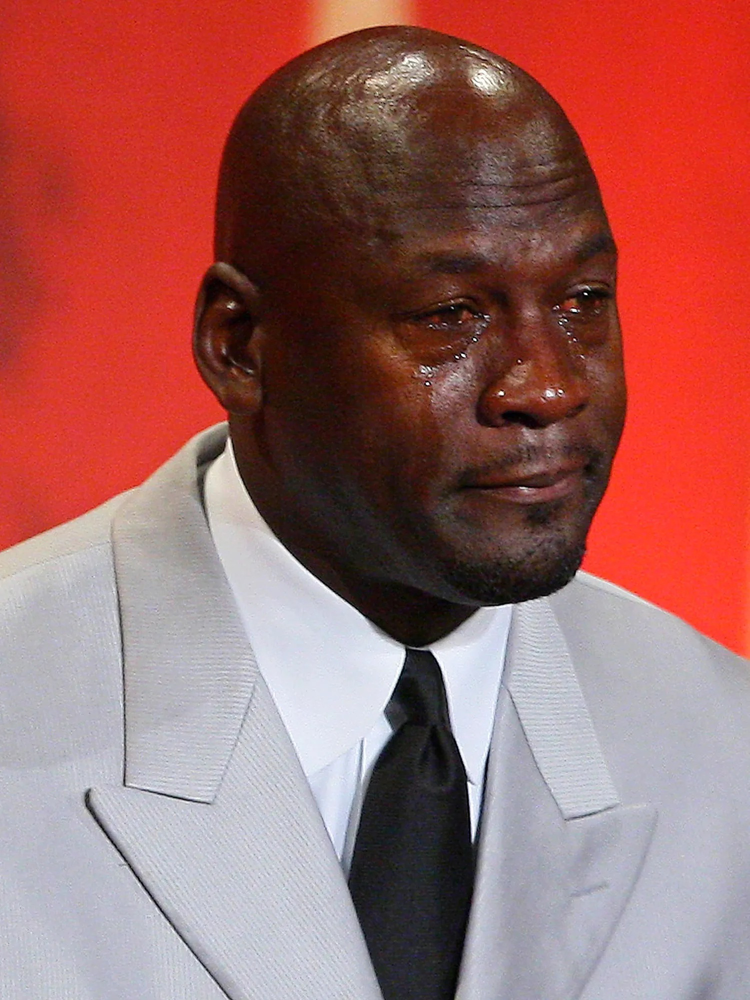
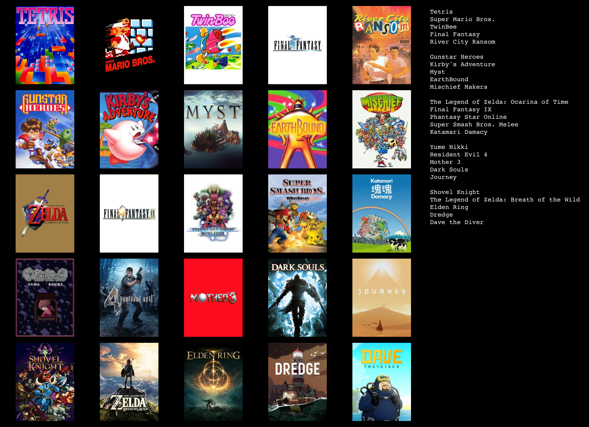

Music

One of my biggest hobbies is watching Sports! I wasn't really into it when I was younger but by my mid 20s I got hooked on baseball and then other sports followed. I watched some baseball as a young person but it was 2015 or so that I got really really into it. Baseball is my favorite sport and basketball probably my second favorite and between those two sports I'm busy for most all of the year. My favorite baseball teams are the Cubs, Cardinals, Diamondbacks, Braves, Royals, Rays, Nationals, more. For basketball I like the Bulls, Bucks, Suns, Cavaliers, Spurs, more. For football, I'm a Bears guy, so pray for me. I also like the Chiefs and I love laughing at the Commanders. For Hockey I can only get myself to really care about the Blackhawks. For soccer I chose "my team" as Crystal Palace but I don't have much knowledge of the team yet, something to work towards. I am very interested in Illinois sports, Wisconsin sports, midwest sports. My favorite athlete ever is Michael Jordan by far.
I love video games and always have ever since my young years. I started on things like 90s PC games and edutainment stuff and then moved on to various consoles. The Nintendo 64 changed my world when it came out, as did Pokémon. By now I've played so many games and just a few that are special to me include but are not limited to: Tetris, Super Mario Bros., Twinbee, River City Ransom, Gunstar Heroes, Kirby's Adventure, Myst, Earthbound, Mischief Makers, Ocarina of Time, Phantasy Star Online, Final Fantasy IX, Super Smash Bros. Melee, Half Life 2, Katamari Damacy, Yume Nikki, Resident Evil 4, Mother 3, Dark Souls, Journey, Shovel Knight, Breath of the Wild, Dave The Diver, more!

When I was a student I was particularly interested in studying art history and I still frequent art galleries / museums and buy art history related books. I love mostly paintings, definitely got a thing for impressionism and also modern and contemporary art but I really like it all. Some of my favorite artists include Piet Mondrian, Mary Cassatt, Cy Twombly, Karel Appel, Helen Frankenthaler, Rene Magritte, Man Ray, Katsushika Hokusai, Nam June Paik, and plenty of others. I take thousands of pictures of paintings and other works of art at museums so I have plenty of content to post. I also paint myself occasionally but I am very bad at it, I mostly just paint abstract things.